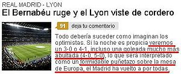
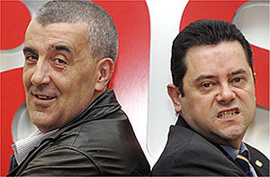
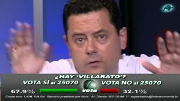
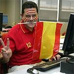
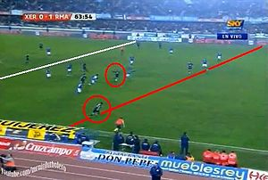

Tomás Roncero
 De: La Frikipedia, la enciclopedia extremadamente seria.
De: La Frikipedia, la enciclopedia extremadamente seria.
De la serie grandes personajes:
Posando más favorecido de lo que realmente es
| Nacimiento
|
1965
|
| Muerte
|
Cuando descienda el Madrid o cuando el Barça gane 10 Champions
|
| Ocupación
|
Periodista (dicen) del ASco y del Carrusel Deportivo (CENTRAL LECHERA de Florentino Pérez)
|
| Nacionalidad
|
Español
|
| Malo o bueno
|
Es malo hasta para el Madriz
|
| Atentados contra la humanidad
|
Sigue leyendo, no caben aquí
|
| Religión
|
Mandrilismo
|
| Notas
|
No sabe cómo utilizarlas
|
«El Real Madrid no ha robado en su vida»
~ Roncerdo en su mundo de fantasía
«La prepotencia se paga»
~ Roncerdo antes de pronosticar un 4-1 el día del 2-6
«Florentino no es un ser superior, Florentino es un generador de ilusiones, un mago»
~ Roncerdo sin saber que el Real Mandril no se comería un rosco ni con Flopper ni sin él
«Las elecciones del Barça han sido un proceso artificial, porque no había ni siquiera dos candidatos para luchar por la victoria»
~ Roncerdo sin enterarse de que en 2009 Florentino Pérez volvió a la presidencia Real Mandril bajo palio de la "prensa" mandrilista y sin pasar por las urnas
«Miedo, tenéis miedo de ver al Madrid líder»
~ Roncerdo antes del 5-0
«El Barça es un globo hinchado que se está deshinchando, lo digo muy en serio»
~ Roncerdo antes de que el F.C. Barceló ganara la Liga
«El Barça pagará su prepotencia»
~ Roncerdo volviendo a decir lo mismo de cuando el 2-6 y antes de que el F.C. Barceló ganara la Liga
«Con Mourinho al lado, la Copa de Europa la vamos a ganar»
~ Roncerdo antes de que el F.C. Barceló eliminara al Real Mandril de la Copa de Europa
«El madridista pide un poco más de respeto»
~ Roncerdo olvidando que él no respeta al barcelonista
Tomás Roncerdo (también conocido como Roncero patatero, Tomás Cincocero, Tortell Roncero, la Belen Esteban del Real Madrid o Tomás Ron5-cero) es un hooligan que en sus ratos libres se dedica a hacer de periodista (dicen) en el diario JUAS. También comenta los partidos en el Carrusel Deportivo.
Vida y milagros
 La influencia de Roncerdo en el
ASco se nota...
 Roncerdo cuando Jeffren metió el 5-0.
El "periódico" para el que "trabaja".
- En 1492, es descubierto por Colón intentando convencer a los negritos de Sudamérica para que jueguen en el Real Mandril. Les asegura que ganaran Copas de Europa mientras dure con vida Tito Paco Franco.
- En 1666, se revela como el Anticristo y convence a Bruce Lee para que mate de una cata de artes marciales a cualquier persona que no quiera jugar en el Mandril.
- En 1771, no hace nada, pero es una fecha capicúa.
- Desde 1939 a 1975, se mantiene en estado de orgasmo permanente chupando estatuas de Tito Paco mientras recita el dogma: "¡¡Di Stefano es Dioooooooooooooooooooooooos y Gento, su profetaaaaaaaaaaa!!"
- A partir de 1975, comienza a adquirir forma porcina debido al recién adquirido hábito de comer mingas de Cerdos mandrilistas como intento para recuperar el espíritu de Tito Paco.
- En 1980, es sorprendido intentando robar el Rabo Incorrupto de Tito Paco.
- En 1992, sufre una catársis mental al ver al Barcelona proclamarse campeón de Europa y se intenta suicidar con una bala inteligente del ejército de salvación. Desde entonces la bala se alojó en su cerebro provocando que adquiriera cierta inteligencia y otorgándole la facultad de predecir el futuro.
- En 2002
por el culo como Dios, sufre un orgasmo multicorporal con el gol de Zidane en Glasgow que afecta a todo seguidor del Mandril. Desde entonces, cuando a Roncerdo le excita algo grita: "Ziddddaaaaneeeeeeee" y comienza a soltar espumarajos blancos, mezclas de saliva y semen por la boca.
- En 2003
te la mete Andrés, profetiza que Florentino Pérez convertirá al mundo en una nueva raza aria que caminará sobre los impíos cuerpos de cualquier persona que no abrace la religión mandrilista.
- En 2004
que te la meto por el ano, profetiza que Tito Paco se alzará de entre los muertos para mayor gloria del adalid blanco.
- En 2005
por el culo te la hinco, se comió de un tirón 10 Copas de Europa reproducidas en heces de Ronaldo mientras giraba 10 veces sobre sí mismo y sujetaba 10 velas blancas con los pies y gritaba el salmo: "¡La Décima está aquí! ¡La Décima está aquí!"
- En 2006, el Barcelona gana la Champions League y Roncerdo acomula 200 litros de bilis que le hacen explotar para regocijo de los seres inteligentes. A fecha de hoy se encuentra en paradero desconocido.
- En 2007, refunda la Cofradía del Clavo Ardiendo, para deleite de los lectores del Ass.
- En 2008
te la menea un pelocho, con el Real Mandril ganando la Liga con récord de puntos pero sin jugar a nada (como siempre), entra en un estado de éxtasis permanente que incrementa aún más su madridismo y le hace vislumbrar una nueva etapa de éxitos blancos (XD).
- En 2009, el Barça despliega un brillante juego y consigue el sextete (Liga, Copa, Champions, ambas Supercopas y Mundialito de Clubes) a pesar de todos los intentos de evitarlo de Roncerdo. Estuvo al borde del cataclismo, pero con la vuelta de Florentino Pérez y sus fichajes consigue superarlo, pronosticando que el Real Mandril llegará a la final de la Champions de 2010 (owned epic fail).
- En 2010
me doy la vuelta y te la meto otra vez se lleva de nuevo un varapalo luego de haber pronosticado que el Madrid ganaría el triplete (volvió a no comerse un colín) y que el Barça no ganaría nada (gana la Liga y la Supercopa). Es en este año donde nuestro amigo Roncerdo casi muere de 5 infartos consecutivos luego de presenciar como el Madrid de su querido Floren y su amado Mou es goleado en el Camp Nou por un Barcelona pletórico (5-0). Desafortunadamente, los doctores le logran salvar; desde esa fecha se encuentra en paradero desconocido.
- En 2011 el Barça vuelve a ganar la Liga y la Champions deslumbrando al mundo entero y hundiendo más a Roncerdo. Pero como mal bicho nunca muere, el Mesías del mandrilismo resurge como una bestia de las profundidades, atraído por los nuevos fichajes de su equipo. Alimentándose con sus críticas sobre el Barça, cada vez se hizo más fuerte hasta convertirse en el ídolo de la "Central Lechera Florentiniana". Su poder es impresionante hasta que se convirtió en un Dios. Ya como Dios, mandó a su profeta para intentar destronar al "Rey" Lionel Messi por decimonovena vez. Aquel profeta se llamaba Neymar, El gallo brasileño [1]. Las espadas están en todo lo alto...
- En 2013, el Madrid gana tantos títulos como dedos tiene la mano de Doraemon y su hasta entonces venerado Mauri se pira del Madriz enseñando el escroto a toda la afición blanca, lo que produce importantes espasmos cerebrales a Roncerdo [2] [3].
¿Sabías que...
 Roncero yendo de víctima para justificar los fracasos del Real Mandril
 Roncerdo haciendo el ridículo
- Siempre que pierde el Real Mandril, en sus contracrónicas aparece la palabra "Villarato"?
- Cuando gana con ayuda del árbitro, ni menciona al colegiado?
- Cuando el árbitro perjudica al Barça, Roncerdo se las apaña para manipular y hacer creer que le favorece [4]?
- Si Roncerdo no se calla, el Real Mandril conseguirá antes la décima vez que es eliminado en octavos antes que la décima Champions?
- Roncerdo tiene un problema psicológico de obsesión blanca?
- Roncerdo, a partir de marzo, mira las series de Danpena 3 entre semana porque su equipo sólo juega los fines de semana?
- Dice que prefiere ser valiente y bocazas?
- Incluso los madridistas le regañan por ser demasiado bocazas (lo dijo él mismo)?
- Roncerdo da asco?
- El As, como su nombre indica, también?
- Sólo hay una persona que le iguala en su barcelonitis: Tomás Guasch?
- Este último dice ser del Espanyol, pero es más madridista que el copón?
- Para Roncerdo su nuevo Dios es Mourinho y Cristiano Ronaldo su profeta?
- Cada artículo suyo en el JAS es más tronchante que el anterior?
- Aparte de su barcelonitis galopante, padece la enfermedad de Roncerdo? Su médico, al ser preguntado por lo que padecía el susodicho, no supo diagnosticarle la gravedad de su enfermedad, por lo que se cree que el sacrificio humano sería la solución a sus males y a los del mundo en general.
- Duerme todas las noches, con una foto de Baúl, otra de Santiago Bernabú y otra de su caudillo redentor?
- Son míticos sus artículos y vídeos tomándole el pelo a su colega del Patético de Madrid [5] [6]?
- Su auténtico nombre es Thomas Rumpig y fue colaborador en la Alemania nazi?
- Aliña sus ensaladas en la bacenilla de Alfredo Di Stéfano?
- 9 de cada 10 cerdos no compartirían piara con él?
- Ama a Vicente del Bosque porque es el único madridista con "un título" en los últimos cuatro años?
- Se casó vestido de blanco, con su velo y su liguero, e increpó al cura con su célebre ¡VILLARATO! por ir éste de negro (posteriormente lo borró con Potorroshop)?
- Fue expulsado de los Ultra Sur por no ser un cerdo de raza celta pura?
- Su comida favorita son las bellotas (las de la encina y la de CR7)?
- Es la mascota favorita de Pedrerol en la "tertulia" deportiva PUNTO BELLOTA?
- Tuvo la jeta de criticar a los periodistas catalanes por ser forofos?
- Antes de fichar a Cristiano, dijo que era un "dulce envenenado" [7]?
- Dijo que Cristiano iba a jugar un partido [8] y no lo jugó [9]?
- Le tiraba flores a Dani Alves cuando sonaba para el Madrid [10] y ahora lo odia por jugar en el Barça [11]?
- Invocó al espiritu de Juanito mediante una ouija para saber si el Madrid remontaría la eliminatoria de copa contra el Atlético [12]?
Ver también
Enlaces externos
 Esto es de lo que no se queja
Autor(es):
- Krusher
- Nexo
- Fordus
- Cyrano
- Frikiman
- Aque
- Viento
- Khazike Khashondo
- Azulejos
- Jackie27
Frikipedia 2005-2016, Licencia
GFDL 1.2 - Extraído por FrikiLeaks
{kind=link}
{kind=link}